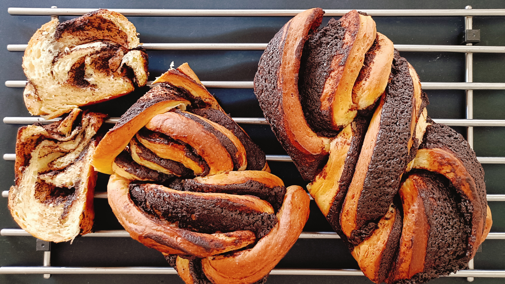

Babka de Chocolate
- Preparación: 2 horas
- Tiempo total de levado: 10 - 24 h
- Horneado: 30-35 min
- Porciones: 2 babkas
INGREDIENTES
PARA LA MASA
- 3¾ tazas (530 g) de harina de trigo para pan o de todo uso
- ½ taza (100 g) de azúcar
- 1 cucharada (10 g) de levadura seca activa
- 3 huevos
- ½ taza (125 g) de agua tibia
- 1 cucharadita de sal
- ⅔ taza (150 g) de mantequilla sin sal a temperatura ambiente y cortada en cubos
PARA EL RELLENO
- 200 g de chocolate amargo o semi-amargo para repostería
- ½ taza (115 g) de mantequilla a temperatura ambiente
- 25 g de aceite de oliva o de girasol
- 50 g de leche
- ½ taza (60 g) de azúcar glass
- ⅓ taza (30 g) de cocoa en polvo sin azúcar
- una pizca de sal (si la mantequilla no es salada)
DESCRIPCIÓN
La definición de Wikipedia nos dice que la babka es un pan dulce trenzado que se originó en las comunidades judías de Polonia y Ucrania. Popular en Israel y en la diáspora judía. Se prepara con una masa tipo "brioche" con levadura que se extiende y se unta con un relleno como chocolate, canela, fruta o queso, luego se enrolla y se trenza antes de hornear. La realidad es que es uno de los panes más deliciosos que he probado (y preparado) en mi vida. El levado largo, de hasta 24 horas le confiere un sabor y una textura únicos, y la combinación con el chocolate amargo es algo que realmente vale la pena probar.
INSTRUCCIONES
- En un recipiente hondo mezcalr la harina, azúcar, levadura y sal hasta que se combinen todos los ingredientes. Añadir los huevos y el agua y mezclar con una cuchara de madera hasta que la masa se una, unos 2-3 minutos. Agregar la mantequilla poco a poco, mezclando hasta que se incorpore.
- Transferir a una superficie de trabajo limpia y ligeramente enharinada y amasar durante unos 10 minutos, hasta que la masa esté completamente suave, elástica, brillante y algo pegajosa. Si queda demasiado pegajosa, agregar un poco más de harina.
- Con las manos enharinadas, transferir la masa a un recipiente hondo untado con aceite. Cubrir con plástico y dejar en el frigorífico entre 10 y 24 horas. Tal vez la masa no crezca mucho durante este tiempo y, por el contrario, se endurezca un poco, eso está bien. Pasado este levado largo, dejar la masa a temperatura ambiente hasta que sea fácil trabajarla, de 30 a 60 minutos.
- Engrasar y enharinar dos moldes para pan de aproximadamente 23x13x7 cm (9x5x3 in). Reservar.
MASA
- En una olla mediana, colocar el chocolate, mantequilla, aceite, leche, cacao en polvo, azúcar y sal, y dejar hervir a fuego medio. Reducir a fuego bajo y mezclar hasta que todo se derrita y la mezcla sea homogénea. Retirar del fuego y dejar enfriar. La mezcla al enfriarse debería adquirir una consistencia untable, por lo que también se puede colocar en el frigorífico un rato hasta obtener una consistencia adecuada (ni demasiado dura ni demasiado fluida).
RELLENO
- Dividir la masa en dos mitades. Extender la masa con un rodillo sobre una superficie ligeramente enharinada formando un rectángulo de 40 x 30 cm (16 x 12 pulgadas). Con una espátula, untar la mitad del relleno sobre el rectángulo.
- Enrollar la masa con las dos manos formando un rollo de 40 cm de largo. Presionar para sellar. Colocar el rollo con la costura hacia abajo.
- Con un cuchillo de sierra, cortar el rollo por la mitad a lo largo, esencialmente dividiendo el cilindro en dos mitades largas y uniformes. Colocar la mitad derecha sobre la mitad izquierda. Repetir este proceso, pero esta vez levantando la mitad izquierda sobre la derecha para crear una trenza simple de dos puntas. Apretar suavemente los otros extremos para que queden las dos mitades entrelazadas, mostrando el relleno en la parte superior. Levantar con cuidado la babka y colocar en un molde para pan. Cubrir con film plástico y repetir este proceso con la segunda mitad de masa y el resto del relleno. Dejar reposar a temperatura ambiente hasta que doblen su tamaño.
- Precalentar el horno a 175 °C (350 °F). Colocar las babkas en la rejilla central del horno. Hornear de 30 a 35 minutos, hasta que se doren por encima y que alcancen una temperatura interna de aproximadamente 93 ºC (200 ºF).
- Dejar enfriar un poco las babkas, luego desmoldar y dejar enfriar por completo antes de servir.
TRENZADO Y HORNEADO
Notas
- Existen muchos tutoriales donde se puede ver claramente el trenzado, por ejemplo aquí.
- Esta magnífica receta es una ligera variación de Pretty. Simple. Sweet.